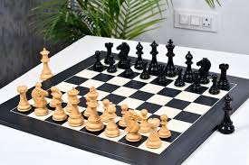

About me: I am a passionate student of Bachelor in Informatics at IMC Krems.
I love coding, sports and in general being productive among other things.

Chess — A hobby of mine that I wanted to pursue more actively but due to outside factors such as there not being stable income I decided against it I actively play on chess.com and have played 3 professional tournaments in my lifetime.
Karate — Due to quitting hockey as a young kid. I decided to take up karate as a new sport. Currently im recovering from an injury but will start training again - 2.11.2025

Programming — As programming is something I want to focus on during my lifetime, I have had experience mostly using Python, Java and partially C. One thing I have started to enjoy are the projects we have in HTML/CSS.